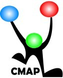

CMAP/AMP Community Media Collaborative

Website:
http://mycmap.org Location:
Gilroy, CA
CMAP, Community Media Access Partnership, is a non-profit tax-exempt public, education, and government public access television station and community media center that serves Gilroy, Hollister, and San Juan Bautista.
Our mission is to train residents in using CMAP’s video production equipment so that they can produce non-commercial community-based television programs to be seen on CMAP’s local access cable channels and live and archived via the web at www.cmap.tv.
CMAP provides locally relevant community content on five cable channels. CMAP also offers free technology and video production training, camera equipment, editing suites and a television studio for use by community members.
Access Monterey Peninsula’s (AMP) mission is to enable local non-commercial media programming which benefits the residents of Monterey County through access to media tools, training, distribution channels and local facilities.
Project Description:
Project Details
AMP and CMAP have identified potential collaborations which would leverage opportunities for community engagement and capacity building locally and regionally due to the combined strengths and geographic proximity of these organizations as well as their fiscal need to collaborate.
1. Conduct Community Needs Assessment and organizational research to identify new opportunities for collaboration in the areas of infrastructure, technology, marketing, staffing and community products and services at each community media center.
a. Report to Executive Directors on the Community Needs Assessment Results
2. Out of the results from the Community Needs Assessment, work with AMP and CMAP staff to develop collaborative approaches and regional coordination to implement/integrate media education programs, curriculum and outreach, marketing and social media campaigns, and technology automation.
3. Identify potential partners and funders to sustain the coordination of the regional efforts
Project Goals & Outcomes
This project will generate capacity-building opportunities for two community media centers, AMP and CMAP, through generating:
–Greater resources through researching and integrating opportunities to increase available and future resources (financial, technical, human, and physical) available to both organizations through consolidation and collaboration for outreach, funding, new fee-based technology, marketing and video production services for non-profits, education, and local residents.
–Greater efficiency through consolidating existing technology and utilizing new open source tools for use by both stations to create automation, engage members, and distribute local video content through social media networks, streaming live video, and by creating centralized, more accessible community media resources in two regions.
–Greater effectiveness by enabling broader outreach/marketing, sharing curriculum and staff, increasing technology efficiency and greater fundraising capacity to achieve current and future fiscal sustainability for each organization
Program Need
-Organizations are technology-focused with room to grow
-Impending financial crisis to traditional funding sources is forcing innovation
-Initial collaboration has highlighted the increased need for potential regional consolidation with regard to technology, finances and marketing
The financial realities facing community media centers nationwide are sobering. AMP and CMAP currently receive 88% of their funding through local cable TV franchise agreements.
A new state-wide cable franchising law (DIVCA) was adopted in 2006 ending local cable franchises in favor of statewide franchising. Both AMP and CMAP have ended or will end their local franchise agreement with their respective cable operators in 2009, leaving their financial futures uncertain and requiring decreased budgets.
This situation calls for drastic budget cuts, (75% of operating costs) and innovative thinking by community media centers, including new ways to adapt to the funding cuts such as regional consolidation and collaboration between community media centers.
Communities throughout the state are losing their public access cable services as local governments in fiscal crisis choose to re-appropriate all or the majority of their cable franchise fees.
The rapid pace of technological change is another key challenge. Both AMP and CMAP have begun to build a foundation for emerging technologies to prepare for these new opportunities to shift the community media model. Each has developed different technology efficiencies that could be merged for greater capacity building and to leverage future revenue opportunities. New open source tools are available to streamline and automate public access systems. In collaboration, these two stations could together implement new tools and strategies to adapt, survive and thrive during these economic and technological changes.
While each station provides excellent community media resources, neither station has organizational history to access community funding commensurate with the services provided.
To move away from a government-subsidized model to a community-supported model with new revenue streams, community media organizations need to consolidate resources, technology and outreach to maximize their ability to serve their communities. This project will research and implement a new model for community media.
Project Tangibles:
Best practices for community media centers:
Currently many media centers share the same challenges as AMP and CMAP. These two organizations are well-positioned within the community media national movement to share the process of regional collaboration and best practices with other community media centers, media arts organizations, CTCs and related non-profits.
Supported Projects
Regional Collaborative Coordinator
Ericha Hager
9/2010 — 9/2011
The VISTA regional collaborative coordinator will manage the initiatives determined by the staff and board of MAP and the other participating stations around sharing specific technology, educational curriculum development, new/social media and PEG management practices. The VISTA will work with CMAP’s Executive Director Kathy Bisbee to increase outreach to regional media centers, continue collaborative efforts with existing partners created during the first VITSA year and implement new technology, marketing and fundraising strategies with both current and emerging collaborative partners.
To fulfill this role, the VISTA will be required to coordinate monthly conference calls and regional meetups; utilize social media tools and Web 2.0 technologies as effectively avenues of communication and education modules between centers; define the roles of each media center in collaborative efforts; schedule site visits to each center, document conversations between centers and determine best practices; identify thought leaders and innovators within the industry; and incorporate new insights into the existing cookbook for regional collaboration.
Outreach Coordinator
John Haffner
9/2009 — 9/2010
The VISTA member would conduct a three-month Community Needs Assessment to survey community organizations, members, board members, staff and community leaders for CMAP & AMP.
a) Provide in–depth analysis of what organizations currently are offering to the communities served, (services packages, community involvement, and community media offerings) and research opportunities for collaboration.
b) Report to Executive Directors on the Community Assessment Results and present recommendations
c) Develop a manual for collaborative work: “Cookbook for Regional Community Media Collaboration” that would be published in print and web form. This cookbook would inspire and create a template for other community media and community technology organizations to work more collaboratively in this new economic environment which requires and encourages new kinds of collaboration and partnerships.
d) Present this cookbook as a body of work at the ACM National Conference in July of 2010 to encourage and give specific examples of new innovative approaches to regional collaboration among community media centers.
With the help of our first-year DASC member, we have expanded collaborations with other community media centers in the state and region, sharing technology, marketing, educational content and curriculum to media centers and non-profit organizations.
-Increased communication with between two media centers to enable collaboration on several key projects including growing capacity of both organizations to fundraise, use technology tools, and manage staff and members.
-Increased communication enabling the implementation of new technology resources, including access to other center’s technical staff, new equipment for CMAP’s institutional network and engineering expertise from other centers.
-Increased CMAP’s ability to fundraise/build community awareness
-Helped to initiate new strategies to develop and share community content between centers.
Based on the success of the first year of this project, we are now in the second year, expanding to a statewide collaboration. For the first year, both organizations expanded our capacity through seeing the need to hire staff for fundraising, collaborated on grants that resulted in funding and staffing, and created an expanded collaboration program into our region. After the second year, we hope that agencies will work together regularly to continue this collaboration.
Our VISTA accomplished all of what was included in our project, but also helped to write grants for the organizations and learned development skills. He was hired by one of the media centers after the project to be a development assistant. He also became involved in developing the second year plan for our expanded collaboration.